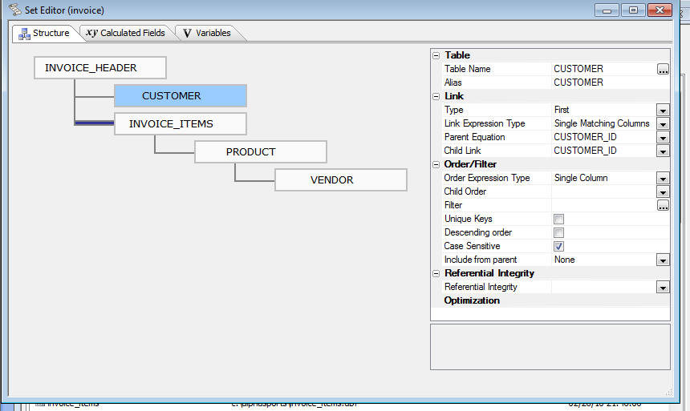

Set Editor
The Set Editor written in Xbasic makes it substantially faster to open a Set for editing
than was the case with previous Set Editors that were written in MFC; especially when editing Sets based on active-link tables.

Note
If you have created any Sets using any of the previous Release Candidates and your Set included tables that have spaces in their names, you will not be able to edit those sets. You will need to re-create those sets. This comment does not apply to Sets created with the old set edit in all versions of Alpha Five prior to V10.5.